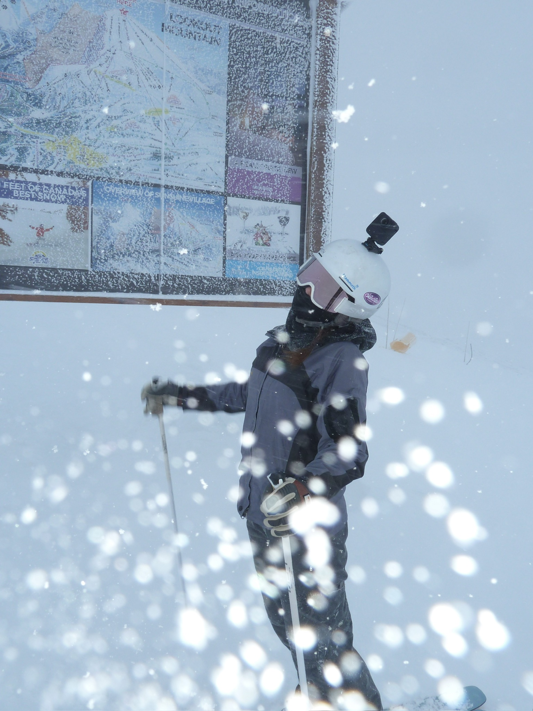
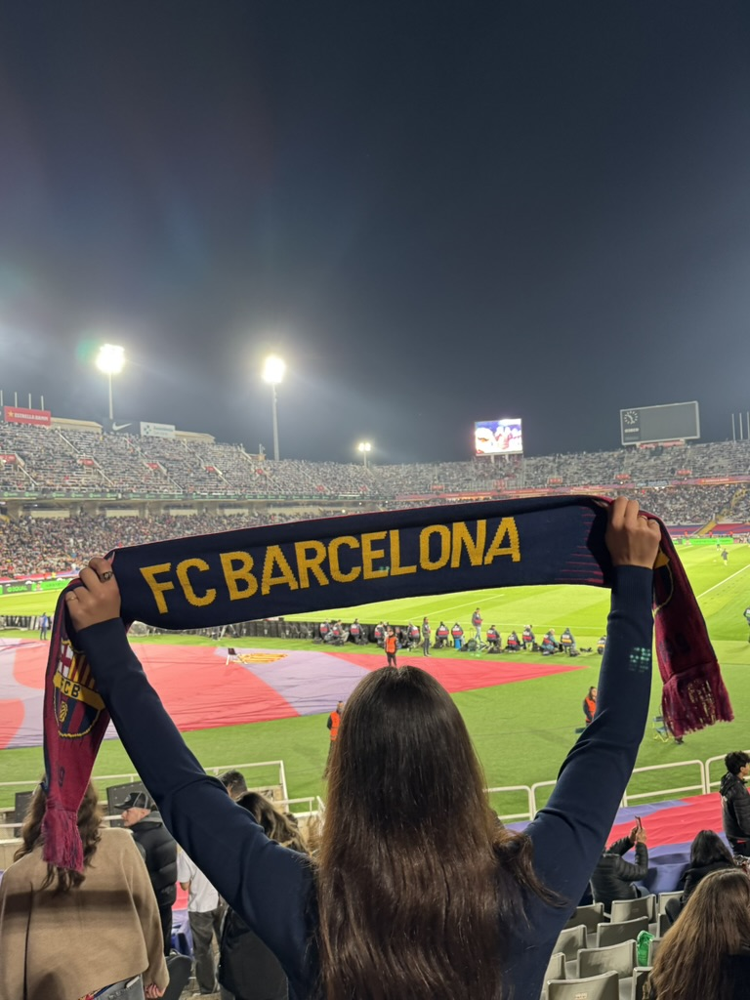

Hi, my name is Itita! I was born in Florida, and lived there until I was 5! From there, I moved to CA and have been here since! Being a coastal kid, I have developed a strong interest in the ocean, marine life, and anything related to it! Growing up, my dad also made it important for our family to experience the world and everything it has to offer. I have played soccer since I was about 5 years old, and I've been skiing for about the same amount of time! Skiing is definitely one of my favorite hobbies when I actually have the time to go.
I've created this portfolio to showcase the work I’ve done throughout this school year. I hope to engage users in my apps, websites, and games!
Throughout Intro to Comp-Sci, I have grown by becoming more confident in my coding and problem-solving skills. I learned how to debug complex errors more independently and better understand programming concepts like loops, functions, and conditionals. Not only that, but I also learned that CS is not just about coding but also about patience, creativity, and critical thinking.

